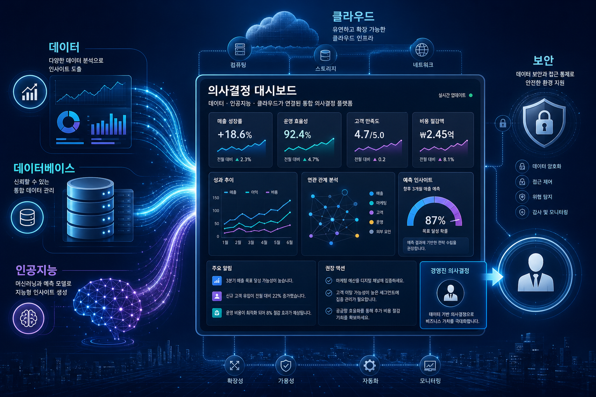
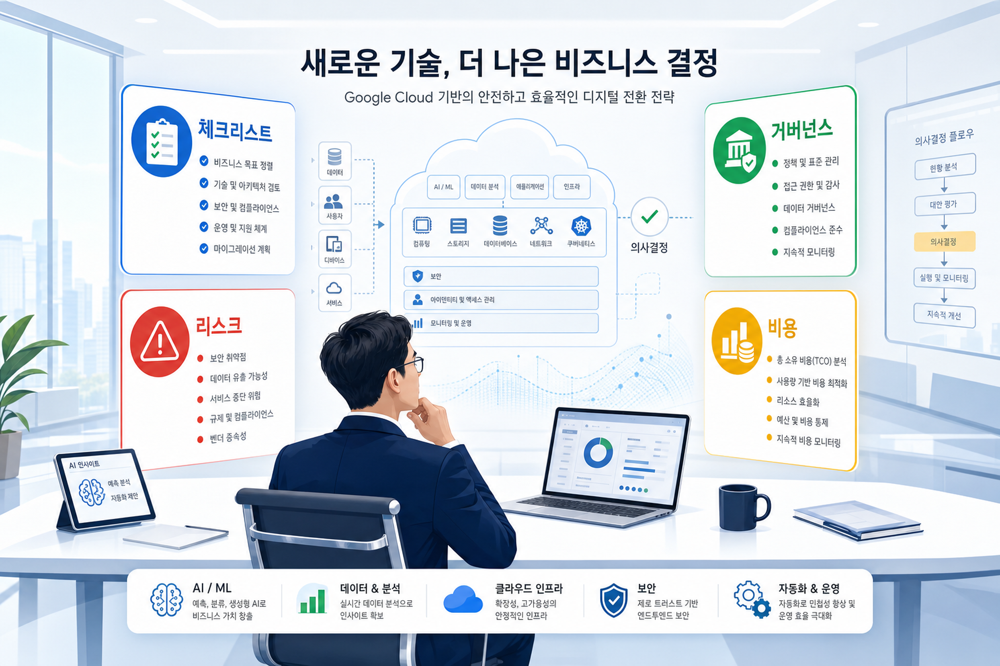

구글 클라우드의 Cloud Fable 5 공개
원문은 최신 인공지능 모델의 구글 클라우드 제공 소식을 다룹니다. 기업 적용 전에는 사용 가능 조건, 가격, 데이터 처리 기준 확인이 필요합니다.
원문 링크2026-06-10 실행에서 확인한 구글 클라우드 블로그 자료를 바탕으로, 기업 의사결정자가 검토해야 할 기술 변화와 리스크를 출처 기반으로 정리했습니다.
이번 자료는 특정 내부 제품이나 조직 전략으로 확대 해석하지 않고, 구글 클라우드 원문에서 관찰되는 기술·서비스 변화만 근거로 삼았습니다. 판단이 어려운 항목은 확인 필요로 남겼습니다.


수집 문서에서 데이터베이스, 분석, 관리형 처리 서비스가 언급될 경우 기업은 성능·비용·운영 복잡도 변화를 함께 평가해야 합니다.
보안·아이덴티티 계열 신호는 기능 도입보다 권한 모델, 감사 로그, 정책 적용 범위를 먼저 확인해야 합니다.
인공지능 관련 기능은 모델 성능만이 아니라 데이터 연결, 접근 권한, 비용 가시성, 책임 있는 사용 조건을 함께 보아야 합니다.
| 서비스·기술 | 관찰된 사실 | 기업 검토 포인트 |
|---|---|---|
| AlloyDB | 이번 수집 문서에서 언급된 기술 신호입니다. | 적용 가능성, 리전, 가격, 권한, 로그 연계를 확인해야 합니다. |
| GKE | 이번 수집 문서에서 언급된 기술 신호입니다. | 적용 가능성, 리전, 가격, 권한, 로그 연계를 확인해야 합니다. |
| Kubernetes | 이번 수집 문서에서 언급된 기술 신호입니다. | 적용 가능성, 리전, 가격, 권한, 로그 연계를 확인해야 합니다. |
| Gemini | 이번 수집 문서에서 언급된 기술 신호입니다. | 적용 가능성, 리전, 가격, 권한, 로그 연계를 확인해야 합니다. |
| Mandiant | 이번 수집 문서에서 언급된 기술 신호입니다. | 적용 가능성, 리전, 가격, 권한, 로그 연계를 확인해야 합니다. |
| Google Cloud Security | 이번 수집 문서에서 언급된 기술 신호입니다. | 적용 가능성, 리전, 가격, 권한, 로그 연계를 확인해야 합니다. |
한국 기업은 신규 클라우드 기능을 도입할 때 데이터 위치, 개인정보 처리, 내부망 연계, 권한 승인 절차, 비용 배부 기준을 함께 검토해야 합니다. 이번 수집 데이터만으로 국내 리전 지원이나 가격 효과를 단정할 수 없는 항목은 확인 필요입니다.
목적: 히어로 이미지 / 삽입 위치: 문서 상단 / 이미지 생성 프롬프트: 구글 클라우드 기술 신호를 나타내는 전문 블로그 커버 / 권장 비율: 16:9 / 대체 텍스트: 구글 클라우드 일일 전략 블로그 이미지 1
목적: 데이터·보안·인공지능 연결 인포그래픽 / 삽입 위치: 중간 분석 섹션 / 이미지 생성 프롬프트: 데이터 분석, 데이터베이스, 인공지능 워크로드가 의사결정 대시보드로 모이는 장면 / 권장 비율: 16:9 / 대체 텍스트: 구글 클라우드 일일 전략 블로그 이미지 2
목적: 의사결정 체크포인트 시각화 / 삽입 위치: 실행 검토 섹션 / 이미지 생성 프롬프트: 기업 의사결정자가 신규 기술의 리스크와 거버넌스를 검토하는 장면 / 권장 비율: 16:9 / 대체 텍스트: 구글 클라우드 일일 전략 블로그 이미지 3